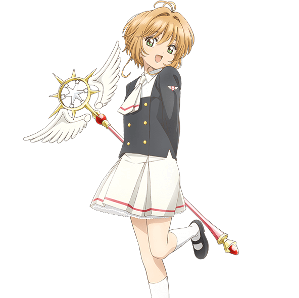

欢迎访问木之本樱的主页
个人简介
木之本樱是日本漫画家CLAMP所创作的漫画《魔卡少女樱》的主人公。她是一个阳光、活泼、善良的小学生，她在一次偶然的机会下发现了一本神秘的魔法书籍，并意外将书中的魔卡解散。为了重新收集散落在各地的魔卡，桜踏上了寻找魔卡的冒险之旅。在这个过程中，她与书中的守护者小可、朋友大道寺知世、李小狼以及其他伙伴们展开了一段美好的友谊。
在收集魔卡的过程中，桜不断地学习和成长，她通过努力和勇气一次又一次地克服困难，最终成功地将所有魔卡收集起来。木之本樱的故事不仅仅是关于冒险和成长，还体现了友情、爱情和亲情的价值。她的故事激励着许多读者，让他们相信勇气、善良和爱可以战胜一切困难。
个人经历简介
- 释放魔卡：故事开始于樱在学校图书馆无意中释放了魔卡（Clow Cards）。这些卡片拥有强大的魔法力量，由魔法师克洛（Clow Reed）创造。因此，樱被基洛（Keroberos，魔卡的守护兽）指派为捕捉这些失控魔卡的任务。
- 遇到月（Yue）：在捕捉完所有魔卡后，樱面临了一个考验：战胜克洛的另一位守护兽——月。在经过一场艰苦的战斗后，樱成功地战胜了月，并被确认为新的魔卡主人。
- 魔卡变成樱卡：随着时间的推移，魔卡开始失去力量。为了挽救这些卡片，樱通过使用自己的魔法力量将它们转变为樱卡（Sakura Cards），从而确保它们的存在。
个人最喜欢的4本书
- 《克洛卡》
- 《魔卡少女樱》
- 《CLEAR CARD》
- 《人型电脑天使心》
个人兴趣简介
- 唱
- 跳
- 体操
- 收集卡片
主干课程成绩
| 课程名 | 开课学期 | 任课教师 | 分数 |
|---|---|---|---|
| 小学数学 | 2012秋季 | 观月歌帆 | 90 |
| 小学国语 | 2012春季 | 观月歌帆 | 80 |
| 小学英语 | 2012春季 | 观月歌帆 | 85 |
| 小学科学 | 2012春季 | 观月歌帆 | 85 |
| 体育 | 2012春季 | 观月歌帆 | 100 |
| 社会 | 2012春季 | 观月歌帆 | 93 |
相关链接
其他个人想表达的信息
小樱太可爱了❤❤❤